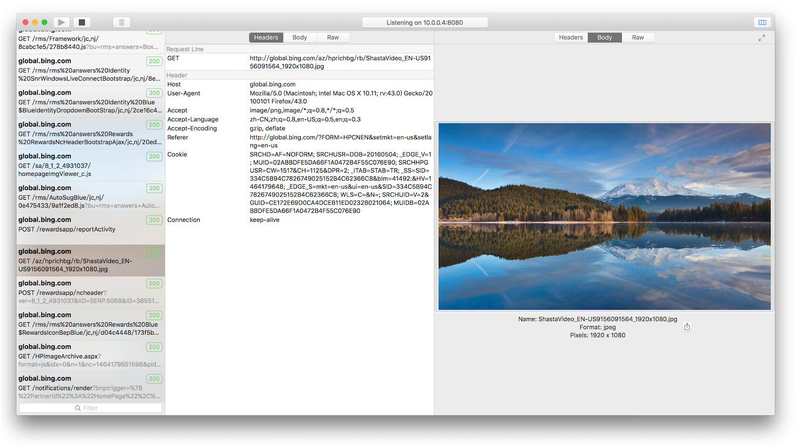

Captor is an HTTP protocol analyzer. It capture and decode HTTP and HTTPS traffic, make it simple for developers to debug.

How to work
Captor captures HTTP/HTTPS traffic between chosen devices and the Internet, It allows you to analyze incoming and outgoing data to monitor requests and responses before they hit the browser.
Key features
- HTTPS traffic analyse (Needs to install captor certificate to decrypt HTTPS traffic, Guide)
- RESTful debugging, view JSON and XML request and response in tree view or text view
- Filtering Support for session list
- Capturing traffic on any platform (iOS, MacOS, Android, Windows etc.)
- Optimization for OS X，native and easy to use
- Support HTTP1.0 and HTTP1.1
Support or Contact
Any questions, contact us captorio.help@gmail.com and we’ll help you sort it out.